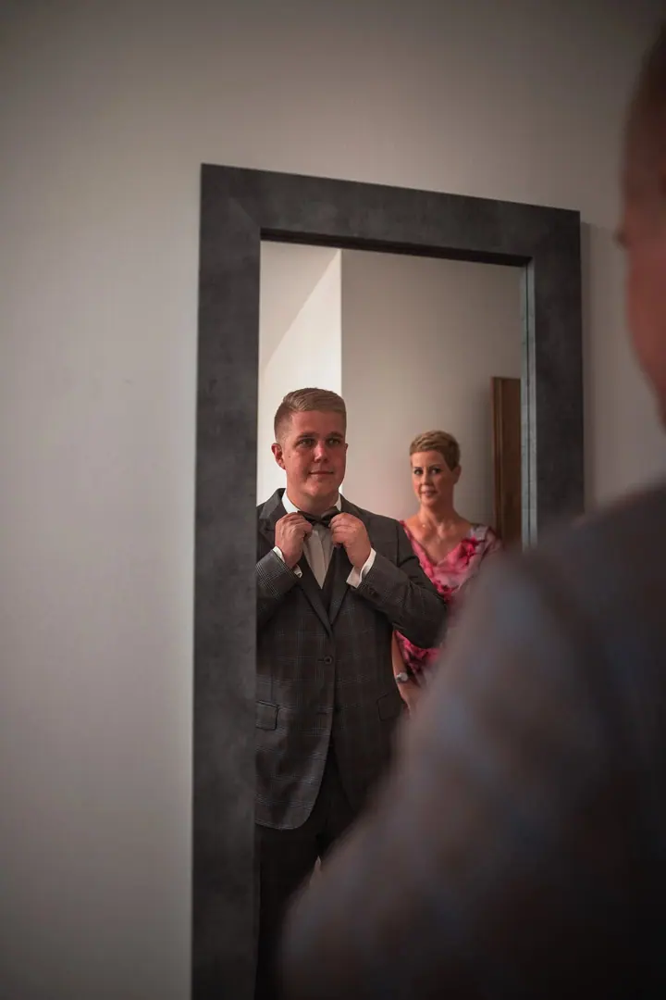
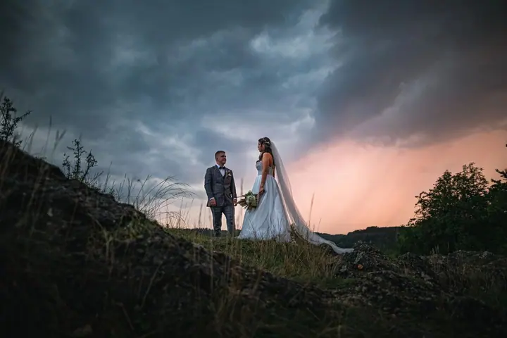
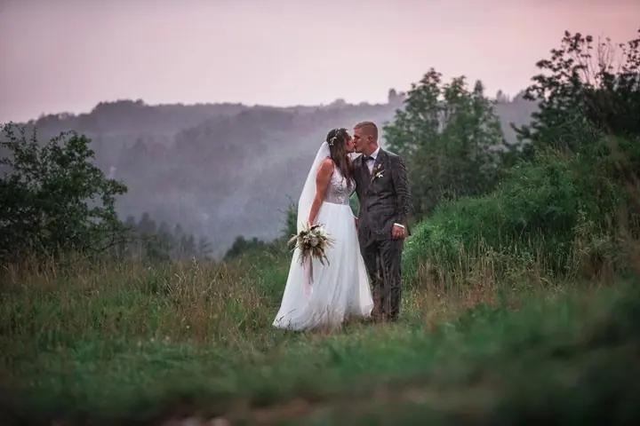
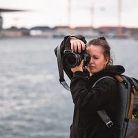

01 / 04
Svatby
Fotím váš velký den podle domluvy, od příprav až po večerní zábavu. Každý fotograf má svůj styl, tak se podívejte, jestli vám sedí ten můj.
Zeptat se na termín→


Svatby pod dramatickým nebem
Zeptat se na termín →(01) Ahoj
Jmenuji se Kamila Sedláčková a fotím svatby, psy a koně i jídlo pro restaurace. Nejraději pracuji venku, s přirozeným světlem a oblohou, která má náladu.
(02) Co fotím
01 / 04
Fotím váš velký den podle domluvy, od příprav až po večerní zábavu. Každý fotograf má svůj styl, tak se podívejte, jestli vám sedí ten můj.
Zeptat se na termín→02 / 04
Portrét, nebo zvíře v akci? Fotím podle vašich představ a kreativitě se meze nekladou, převážně venku v přírodě.
Zeptat se na termín→03 / 04
Fotografie jídel a produktů pro restaurace, menu, web i sociální sítě. Čisté světlo a detail, ze kterého dostanete chuť.
Zeptat se na termín→Dále nabízím
Fotím sport v pohybu, od skoků na kole po psí sporty. Zachytím akci ostře a s atmosférou místa.
↗(04) Postup
Od první zprávy po hotovou galerii.
Krok 1 z 4
Napište mi, co plánujete, kdy a kde. Ráda se doptám na detaily a představy.
Krok 2 z 4
Společně vybereme rozsah focení, místo a čas. U zvířat a párů hledáme hezké světlo venku.
Krok 3 z 4
Fotím v klidu a bez zbytečného aranžování. U svateb klidně od příprav až po večerní zábavu.
Krok 4 z 4
Fotky pečlivě vyberu a upravím ve svém stylu a pošlu vám je v plném rozlišení.
Fotím tam, kde má i obloha co říct

(05) Za objektivem
Jsem fotografka a fotím hlavně lidi a zvířata. Na svatbě jsem s vámi podle domluvy od příprav až po večerní zábavu a hledám momenty, kdy zapomenete, že vás někdo fotí.
Druhou velkou kapitolou jsou psi a koně. Portrét, nebo zvíře v akci? Fotím podle vašich představ, převážně v exteriéru, a ráda vyrážím na místa se silnou atmosférou, do lesa, na skály nebo do pole při západu slunce.
Kromě toho fotím gastro pro restaurace, produkty a sport. Každý fotograf má svůj styl, tak si projděte moje fotky a dejte vědět, jestli vám sedí.

Kamila
Kamila Sedláčková · Svatební fotografka a fotografka zvířat
Svatební balíčky se pohybují od 16 000 do 40 000 Kč podle toho, jak dlouho s vámi budu a co všechno chcete nafotit.
Focení zvířat začíná na 1 000 Kč. Fotím převážně venku a domluvíme se, jestli chcete spíš portrét, nebo zvíře v akci.
Ano, fotím gastro pro restaurace i produkty, cena začíná na 1 000 Kč. Sportovní focení začíná na 2 000 Kč.
Podle domluvy. Můžu být s vámi jen u obřadu, nebo celý den od příprav až po večerní zábavu.
(07) Kontakt
Napište pár vět o tom, co si představujete, a termín, který se vám hodí.